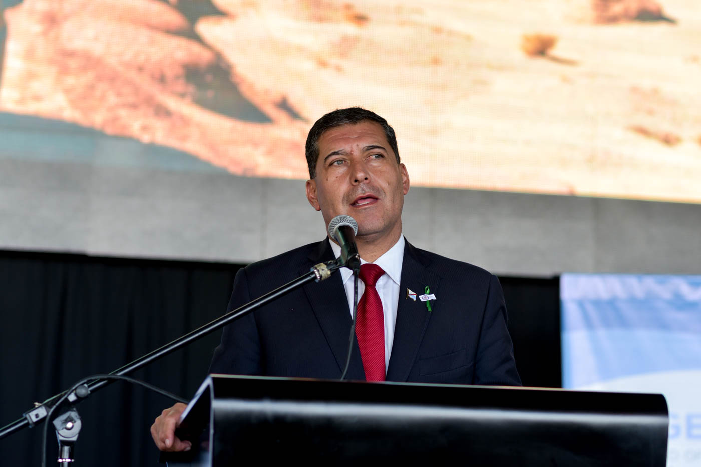
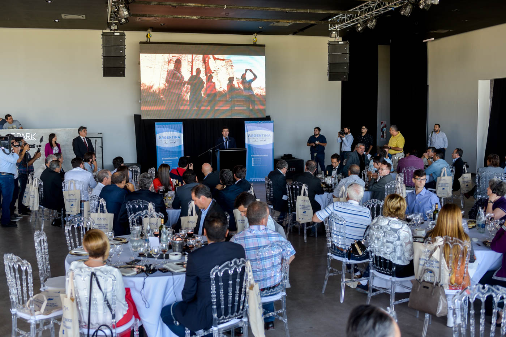
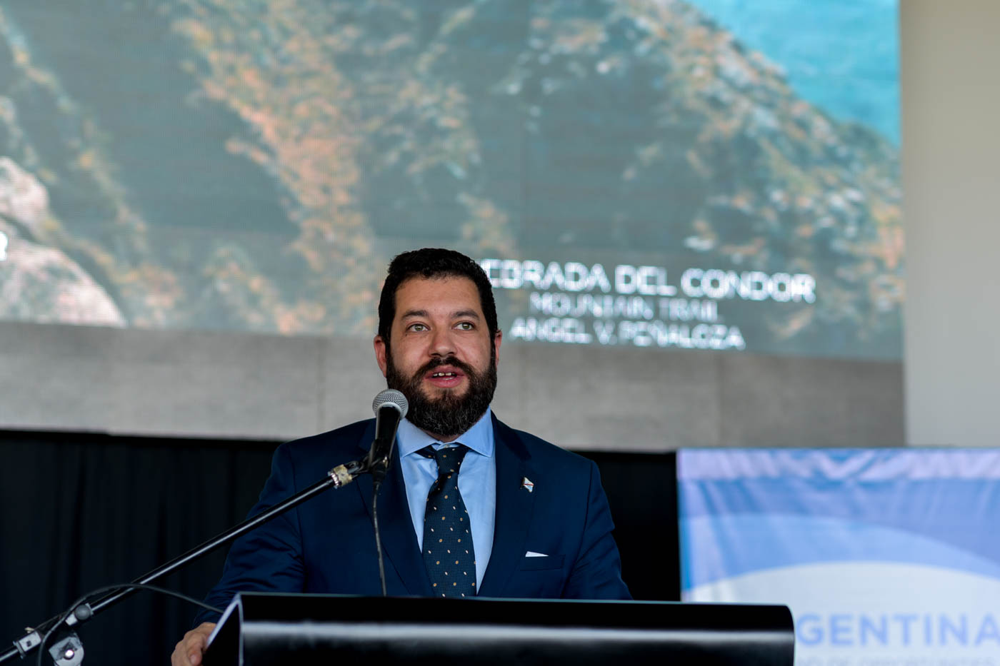
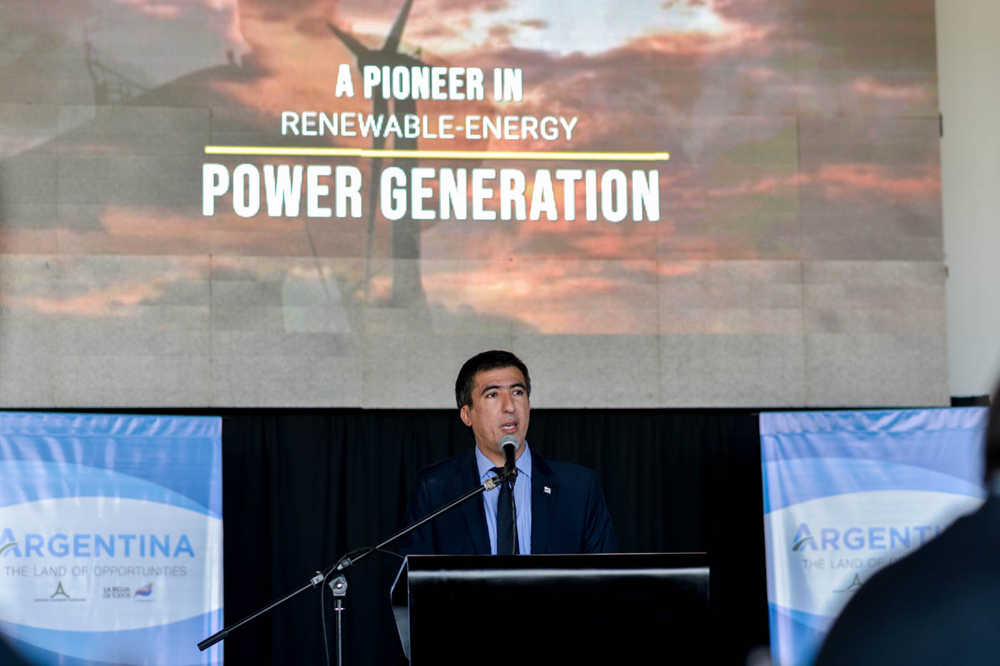
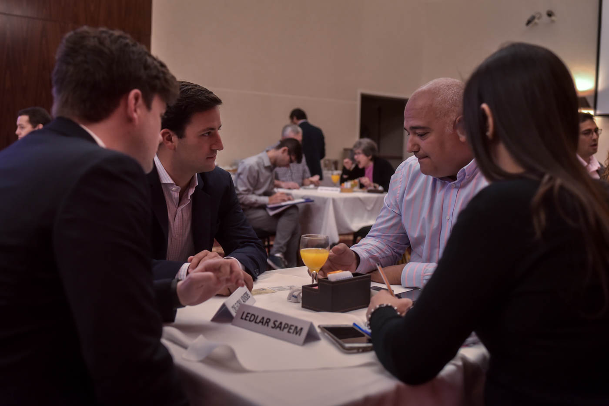
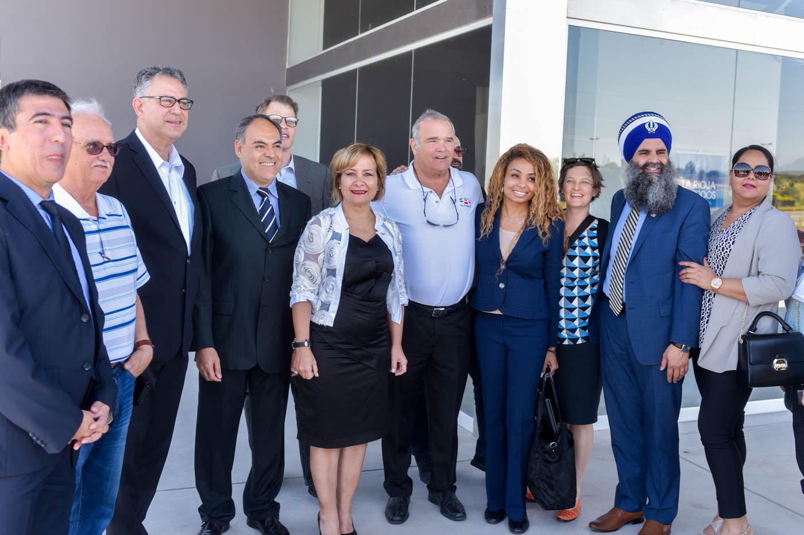
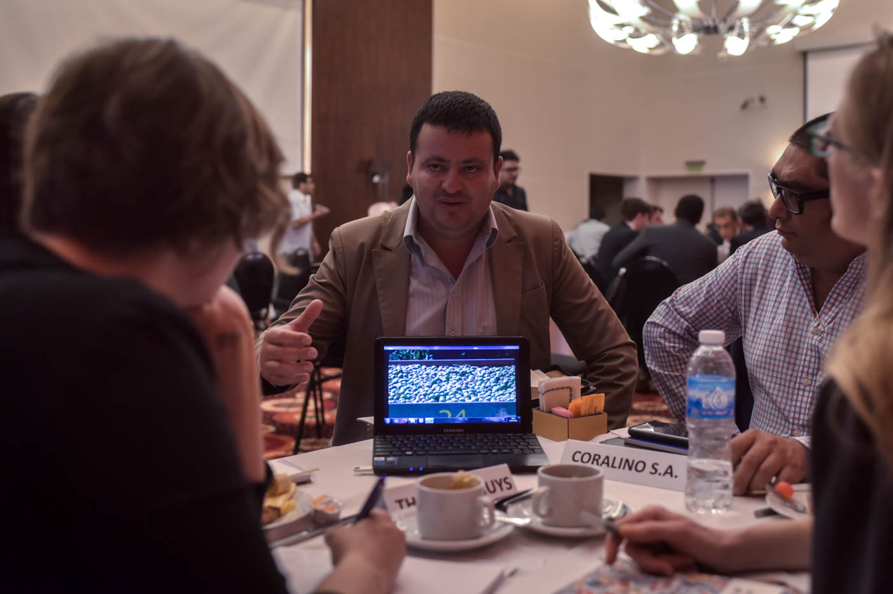
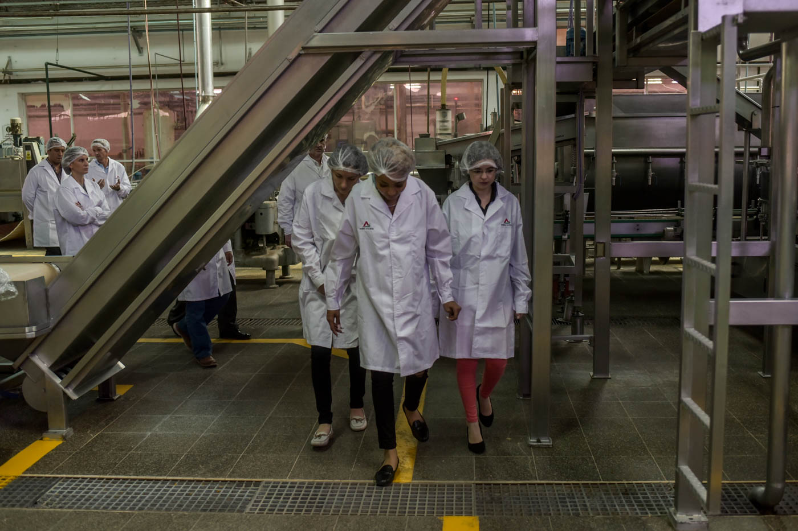
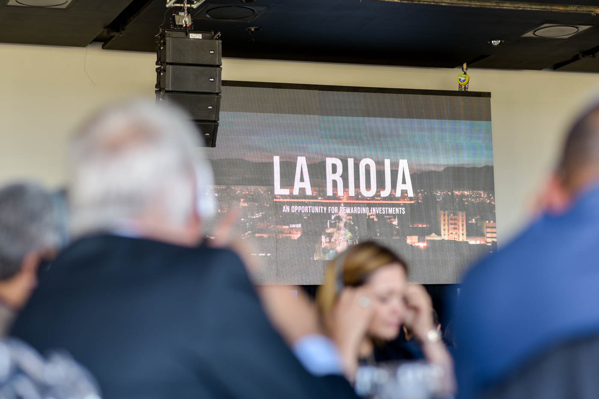

Overview
La Rioja became one of ALF’s flagship provincial cases in Argentina when ALF organized a trade mission structured as an inverse delegation: U.S. executives and investors traveled to the province to meet government leaders and local firms on the ground. The mission replaced generic promotion with transaction-ready engagement: investment forums, sector briefings, B2B matchmaking and site visits.
Strategic Positioning
The mission framed La Rioja as a province with diversified potential: established strengths in agroindustry and viticulture, scalable opportunities in renewable energy and infrastructure, and growing interest in technology and tourism development. Media coverage helped reframe the province as investment-ready and outward-looking.
Outcomes & Legacy
- Local companies gained direct channels to U.S. distributors, technology partners and investors.
- The province positioned specific projects according to international standards and timelines.
- Media coverage consolidated a narrative of La Rioja as a serious, outward-looking economy.
“This trade mission underscores La Rioja’s potential: it brings U.S. investors face-to-face with our region’s agro-industrial and services strengths.”
La Rioja Certified Trade Mission in Pictures
A visual record of institutional meetings, business matchmaking sessions, sector briefings and networking moments that shaped the mission.








